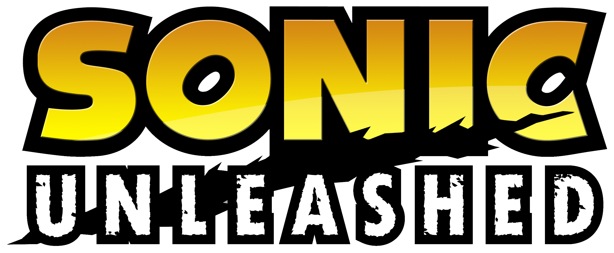

O inicio da formula Boost! Nessa aventura Eggman divide o planeta em pedaços para controlar um ser ancestral, e Sonic se ve dividido em duas formas, sua versão normal que aparece de dia, e uma monstruosa que aparece de noite!
Use a incrivel velocidade do Sonic e a força do Werehog para derrotar os inimigos e salvar o mundo!
Sonic Unleashed nunca foi portado oficialmente para computadores, porém um grupo de fãs fez um port não-oficial do jogo para PC, chamado Unleashed Recompiled, que adiciona diversos recursos e melhorias ao jogo, como melhorias gráficas e correções de bugs.
A primeira aventura 3D marcou uma nova era para a franquia, com um maior foco em história e estilo de gameplay diferentes para todos os seis personagens jogaveis.
O jogo original rodava no Dreamcast, o console mais poderoso da época e que usava varios recursos do DirectX para seus efeitos visuais.
O Gamecube, console que teve o primerio porte de SA1 não possuia esses recursos, resultando na remoção desses efeitos e outros bugs introduzidos como resultado.
Todos os portes subsequentes tiveram a versão do Gamecube como base, resultando em todos eles tem uma iluminação pior e mais bugs que a versão original.
A melhor forma de jogar Sonic Adventure 2 no celular e emular a versão de Dreamcast com o emulador REDREAM